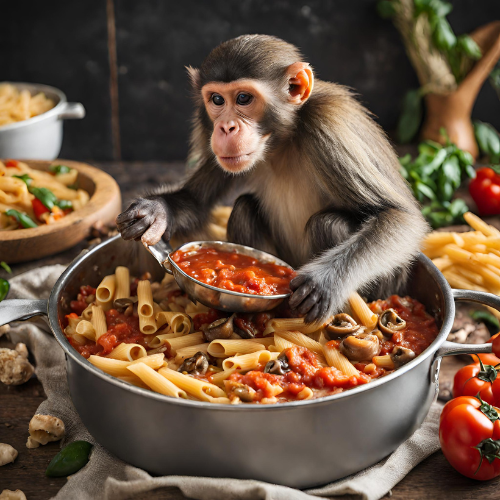

Return to home page
Ça-frappe-bien

Description
Ça-frappe-bien. That's French. Do not let that fool you, this dish is no delicacy. It rougly translates to "it hits well", and that's just what
it does to your stomach. It came from the spontaneous reaction of one of my friends trying it out. Since we're all from Québec, it came out in French.
It's pronounced "sah-frahp-bee-ain". If you roll your r's, you'll sound like a true native.
Note: this recipe is best cooked without any form of measurement at all. Try to cook with your heart.
Ingredients
- 1 serving of penne pasta;
- 1 can of red beans;
- 1 can of black beans;
- 1 portion of sausages, bacon, and whatever other form of greasy meat you can find. There's no going vegan here.
- 1-7 handfuls of shredded cheese of any type.
- 1 onion, diced;
- 2 peppers, cut into strips;
- 2 handful of mushrooms.
- 1 can of tomato sauce;
- 2 tablespoons of olive oil, approximately.
- Salt, pepper, and spices to taste.
- An obligatory dash of hot sauce.
Instructions
- To begin preparing this unholy meal, say a prayer to all of your favorite saints.
- Now that you're prepared spiritually, wash your hands.
- Boil some water on a stockpot or saucepan. Add a dash of salt and olive oil so the pasta gods know you're cooking.
- Once your water reaches a rolling boil, add in your penne.
- Wait precisely around 7 minutes. Drain your pasta, and transfer it to any other suitable recipient while you prepare the sauce.
- Slice up your onions, mushrooms, and peppers.
- Fry all of your greasy selection of meats on the same saucepan you used for the pasta.
- Throw in your onions, mushrooms, and peppers and saute them using the grease from the sausage and bacon.
- Once everything's well cooked and smelling good, add in your beans for some extra sustenance. Don't hold back. Put it all in.
- Put in your tomato sauce too. Don't be afraid.
- Once all your sins have been committed, take your pasta and put it back in the saucepan.
- Give the mixture a good mix, preferably with a wooden spoon, as you add a handful or more of shredded cheese.
- To finish it all up, add a few dashes of hot sauce along with a couple of spices of your choice.
- When all is said and done, your concoction should look like the AI-generated picture above.
- Use a big spoon to serve this on bowl.
- Enjoy while watching "Mad Max: Fury Road"
Back to the top of the page.